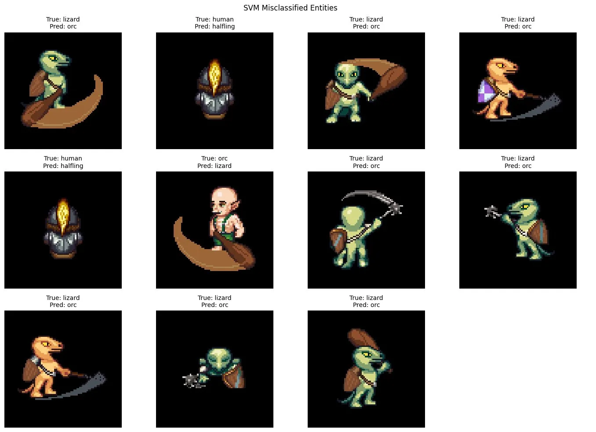
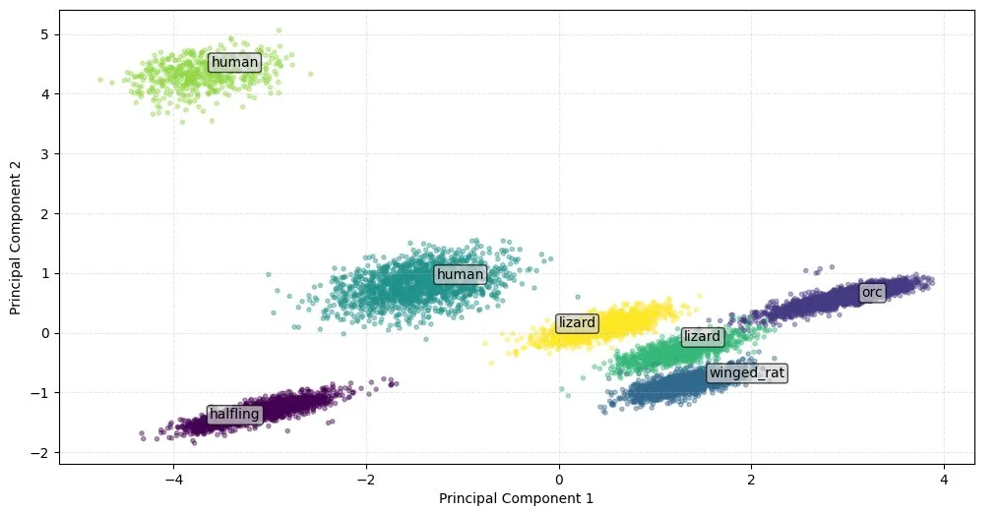
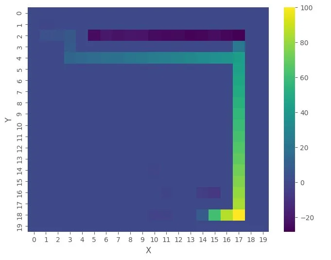

Applied machine learning · MSc coursework
Classification, clustering and RL on one game world
The assessment for Bristol's AI for Robotics unit is set in a dungeon-crawler game world. The brief: pick three tasks in that world and solve one with supervised learning, one with unsupervised learning and one with reinforcement learning, comparing two algorithms on each.
The setup
The unit hands you a game world instead of a robot. A maze dungeon is populated by five species of entity, some friendly and some hostile, and three datasets describe it: 8,023 sprite images of the entities, a table of sensor readings for 10,000 of them with most of its species labels destroyed, and a Gymnasium gridworld of the maze itself. The brief casts the robot as HeroBot, so the report is written as its quest log.
I set the three tasks up as the pipeline the robot would actually need: identify entities from their images, recover the species structure from the damaged table, and learn to navigate the maze.
Friend or foe from sprites
The image set is skewed. Humans make up 40 per cent of it and the rarest class, the winged rat, 7 per cent, so before training anything I looked for features that would prop up the rare class: per-class colour profiles, entity size, and HOG shape descriptors. Size separated the winged rat well and went in alongside the raw pixels. HOG separated much less than I expected and was left out.
KNN came first, with k=3 chosen by validation accuracy and a cosine distance, which edged out euclidean. It reached 97.6 per cent on the 1,604 held-out test images. The metric I actually cared about was hostile entities passed as friendly, because in the game's terms that's the error that gets you ambushed. KNN made six of those. The SVM, with an RBF kernel and C=10 from a short randomised search, made one, at 99.3 per cent overall. Both classifiers had perfect recall on the winged rat, the class I'd worried about.
The persistent confusion was orc against lizard, and the misclassified images point at why: the weapons are similar and fill a lot of the frame. The other honest note is that I picked k on overall accuracy and only checked afterwards that the same k minimised the error I cared about. It did here, but that was luck rather than method.

Species from a damaged table
The sensor table gives ten attributes per entity, and only 500 of its 10,000 species labels survive. So the structure has to come from clustering, with the surviving labels held back as a check on the result. Missing values were filled with each attribute's median and everything standardised, since both algorithms measure distance.
K-Means gave no clear elbow, so I chose k by silhouette score, which pointed at seven clusters, two more than there are species. Projected onto two principal components the clusters are clean, and against the surviving labels each one contains a single species. The extra two exist because humans and lizards each split in half; the second human cluster scores much higher on intelligence and magic, so the split reflects real structure in the data.
Ward-linkage hierarchical clustering recovered the five species directly, one per cluster, and its tree carries more information than the flat result. A split higher up separates the friendly species from the neutral and hostile ones, and a small decision tree fitted to that split showed one attribute, stench, predicting hostile or friendly on its own 97.5 per cent of the time. That's the useful output: one scan instead of ten.

Learning the maze
The gridworld costs one point per step, so return is maximised by the shortest route. I compared tabular Q-learning and SARSA, with hyperparameters tuned by Optuna, and modified the environment to add a penalty for three consecutive moves in the same direction, so the shortest route isn't always the safest action sequence.
The first attempt was the ambitious version: a freshly generated maze every episode, aiming for a general solving strategy. It failed, for a reason worth spelling out. Tabular methods key their values to exact coordinates, so each new layout makes everything already learned stale. Once exploration decays, the agent exploits a map that no longer exists and ends up spinning in place. Tuning doesn't fix that, since it's a representation problem, so the task changed to fixed mazes.
On a fixed maze both algorithms work: a 20×20 maze is learned in around 500 episodes, and the map of maximum Q-values shows the route with values rising towards the exit. SARSA needed its own tuning run. Its best exploration decay came out far faster than Q-learning's (0.93 against 0.995), and with it SARSA reached its plateau roughly 100 to 150 episodes sooner. Both settled on the same shortest path on this maze, but on others SARSA occasionally matched or beat Q-learning, which shouldn't happen if Q-learning had fully converged. That points at the training budget as the remaining limit.

What I took from it
Two things carried forward. Decide the selection metric before tuning anything, since a model can be chosen on a number you don't actually care about and be right only by coincidence. And when an algorithm fails, work out whether the problem is the tuning or the representation before spending more compute; the randomised-maze failure was never going to be tuned away.
← All projects